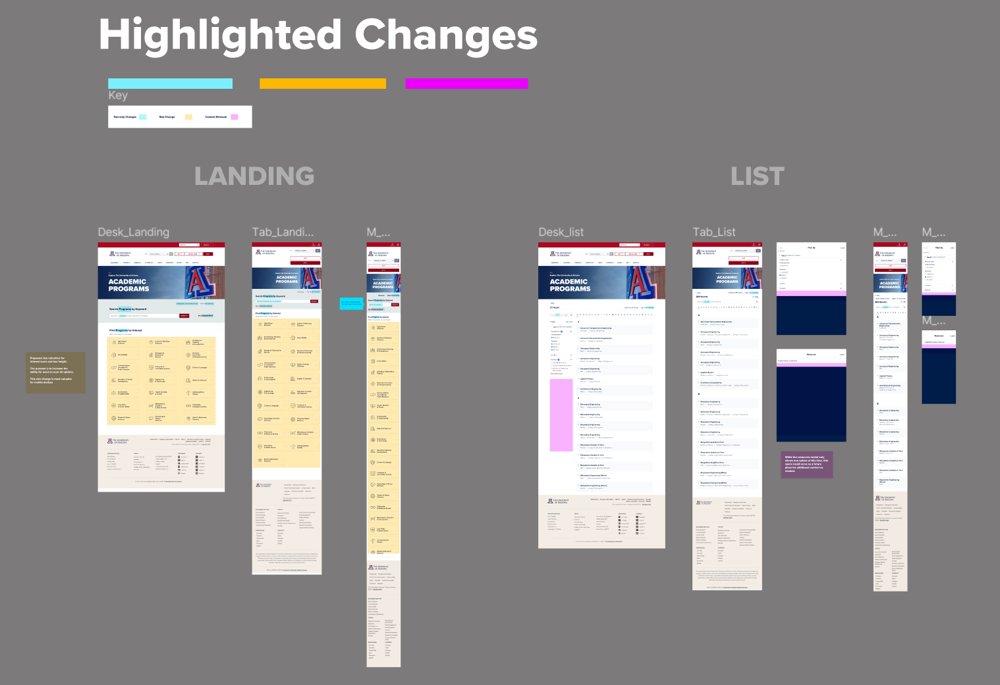

My Contribution
Role
I was the Lead Designer in this project. My job was to insure that the application had consistence across both undergraduate and graduate degrees.
Project Type
Web Application
Project Duration
June 2023 to March 2024
Design Tool
Figma, Adobe Photoshop, Indesign, University Design System
University of Arizona
University of Arizona is a state university located in Tucson Arizona.
Overview
The Graduate Degree Search interface is designed to help users explore and filter graduate programs (e.g., Master’s, PhD) based on criteria such as discipline, location, institution, and program details. The goal is to provide an intuitive, efficient, and visually appealing platform that simplifies the complex process of researching higher education opportunities. This analysis evaluates the interface’s usability, aesthetics, functionality, and user experience, reflecting on the design process and outcomes.
Design Process:
The development of this interface likely followed a user-centered design process:
-
Research:
Conducted user interviews or surveys to understand the needs of prospective graduate students (e.g., prioritizing program reputation, cost, or location).
-
Wireframing:
Created low-fidelity wireframes to map out key components (search bar, filters, results) and user flows.
-
Prototyping:
Built interactive prototypes in Figma to test navigation and filter interactions, iterating based on feedback.
-
Visual Design:
Developed a style guide (typography, colors, components) to ensure consistency and alignment with educational branding.
-
Usability Testing:
Conducted tests with target users to identify pain points, refining the design for clarity and efficiency.
-
Iteration:
Incorporated feedback to enhance accessibility, responsiveness, and functionality.
Changes To Be Made

Building Component Library
 Responsive Design
Responsive Design

Reflections:
This project showcases a balance of functionality and aesthetics, addressing the complex needs of academic users while maintaining simplicity. Key lessons include the importance of iterative testing to refine filters and the value of responsive design for broad accessibility. Future iterations could explore advanced features like AI-driven program recommendations or integration with application portals to further enhance the user journey.
Final Result
Here is a link of the live website
If you want to learn more about the project, let's set up a time and talk.
Thank You!
Thank you for reviewing my work. If you have any questions or want to just connect - feel free to reach out to me via email.